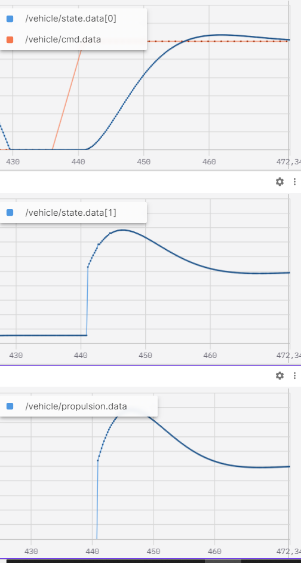
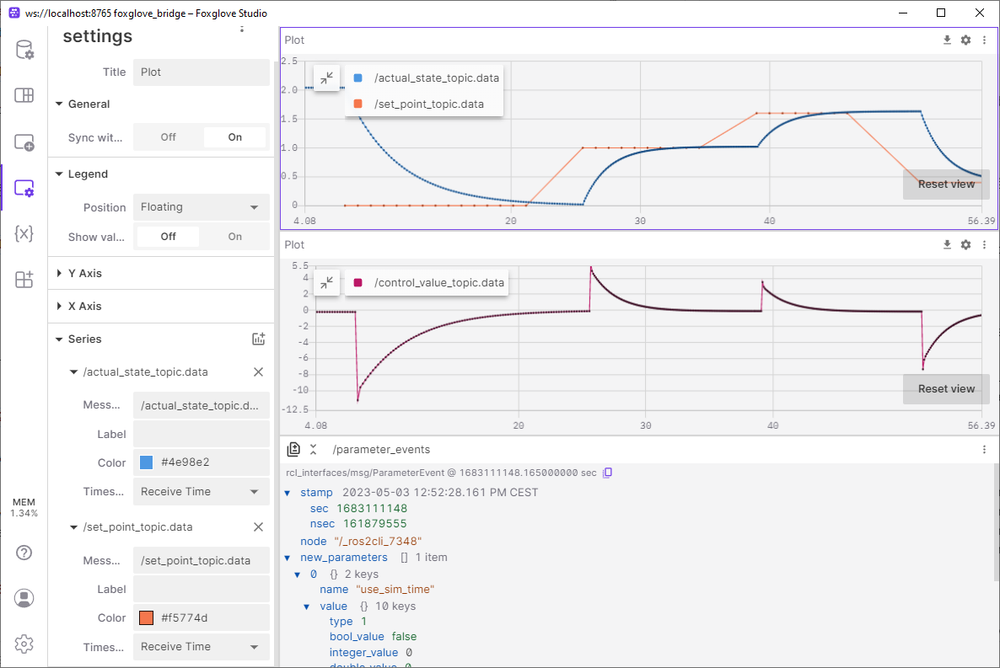

Gyakorlat¶
A gyakorlat első részében egy példa első illetve másodrendű rendszert fogunk használni, erre fogunk PID szabályzót alkalmazni, majd hangolni. A gyakorlat második részében egy szimulált trajektóriakövető robot / jármű működését nézzük át és hangoljuk.
1. feladat: Trajektóriakövetés szimulációval2. feladat: Saját fejlesztésű szabályzó és jármű modell3. feladat: PID hangolás
1. feladat: Trajektóriakövetés szimulációval¶

github.com/jkk-research/sim_wayp_plan_tools
Követelmények¶
A gyakorlat hibamentes lefutásához a következő programok telepítése szükséges:
- ROS 2 Humble: docs.ros.org/en/humble/Installation.html
- Gazebo Fortress: gazebosim.org/docs/fortress/install_ubuntu, Több információ az integrálásról: gazebosim.org/docs/fortress/ros2_integration
- ros-gz-bridge Egy parancsal installálható: sudo apt install ros-humble-ros-gz-bridge
- Ellenőrizük, hogy a colcon_cd megfelelően van telepítve. A csv fájlok a colcon_cd-vel töltődnek be.
Package-ek és build¶
Az alapértelmezett workspace a következő legyen:~/ros2_ws/.
Klónozuk le a package-eket¶
cd ~/ros2_ws/src
git clone https://github.com/jkk-research/wayp_plan_tools
git clone https://github.com/jkk-research/sim_wayp_plan_tools
ROS 2 -es package-ek buildelése¶
cd ~/ros2_ws
colcon build --packages-select wayp_plan_tools sim_wayp_plan_tools
wayp_plan_tools használata szimulátorként¶
1.1. A gazebo indítása¶
ign gazebo -v 4 -r ackermann_steering.sdf
1.2. A Gazebo bridge indítása¶
Ha esetleg nem lenne telepítve a bridge, a következő parancsok segítenek:
sudo apt update
sudo apt install ros-humble-ros-gz -y
Tanteremben pedig:
cd /mnt/kozos/script
./gz_bridge.sh
Ne felejtsünk el source-olni az ROS-es parancsok előtt.
source ~/ros2_ws/install/local_setup.bash
ros2 launch sim_wayp_plan_tools gazebo_bridge.launch.py
Ez a launch fájl a következő node-okat indítja el egyben:
ros2 run ros_gz_bridge parameter_bridge /world/ackermann_steering/pose/info@geometry_msgs/msg/PoseArray[ignition.msgs.Pose_V
ros2 run ros_gz_bridge parameter_bridge /model/vehicle_blue/cmd_vel@geometry_msgs/msg/Twist]ignition.msgs.Twist
ros2 run ros_gz_bridge parameter_bridge /model/vehicle_blue/odometry@nav_msgs/msg/Odometry[ignition.msgs.Odometry --ros-args -r /model/vehicle_blue/odometry:=/odom
Ez a launch a PoseArray-ből egy /tf-et is készít a pose_arr_to_tf.
Opcionális: A gazebo-ban lévő robot irányítása billentyűzettel:¶
ros2 run teleop_twist_keyboard teleop_twist_keyboard --ros-args -r /cmd_vel:=/model/vehicle_blue/cmd_vel
1.3. Waypointok betöltése¶
Megjegyzés: A waypointok egy ponthalmaz, amely az útvonal pozíció, orientáció és sebesség adatait tartalmazza diszkrét pontokra osztva. Ezeket az adatokat jellemzően úgy nyerjük ki hogy az útunk során ROS-ben rögzítjük a gps-től vagy az odometriától az x,y esetleg z koordinátákat, az aktuálishoz képest a következő pontra mutató orientációt és az éppen aktuális sebesség adatot. Végül az imént felsoroltakat csv fájlokban rögzítjük.
Használjuk a ROS 2-es workspacet file_dir-ként:
ros2 run wayp_plan_tools waypoint_loader --ros-args -p file_name:=sim_waypoints1.csv -p file_dir:=$HOME/ros2_ws/src/sim_wayp_plan_tools/csv -r __ns:=/sim1
ros2 launch sim_wayp_plan_tools waypoint_loader.launch.py
1.4. Waypoint goal pose-ként¶
Ahogy az elméleti rész 4. fejezetben az ábrákon látható, minden szabályozási algoritmushoz tartozik egy vagy több goal pose amire az éppen működő szabálzó szabályoz.
ros2 run wayp_plan_tools waypoint_to_target --ros-args -p lookahead_min:=2.5 -p lookahead_max:=4.5 -p mps_alpha:=1.5 -p mps_beta:=3.5 -p waypoint_topic:=waypointarray -p tf_frame_id:=base_link -p tf_child_frame_id:=map -r __ns:=/sim1
ros2 launch sim_wayp_plan_tools waypoint_to_target.launch.py
1.5. A szabályzás indítása:¶
Több lehetőség van:
- single_goal_pursuit: Pure pursuit (for vehicles / robots), a simple cross-track error method
- multiple_goal_pursuit: Multiple goal pursuit for vehicles / robots an implementation of our paper
- stanley_control: Stanley controller, a heading error + cross-track error method
- follow_the_carrot: Follow-the-carrot, the simplest controller
Egy példa a pure pursuit-ra :
ros2 run wayp_plan_tools single_goal_pursuit --ros-args -p cmd_topic:=/model/vehicle_blue/cmd_vel -p wheelbase:=1.0 -p waypoint_topic:=targetpoints -r __ns:=/sim1
ros2 launch sim_wayp_plan_tools single_goal_pursuit.launch.py
1.6. Az eredmények vizualizálása RViz2-ben:¶
ros2 launch sim_wayp_plan_tools rviz1.launch.py
After ign gazebo -v 4 -r ackermann_steering.sdf (terminal 1) and source ~/ros2_ws/install/local_setup.bash (terminal 2), run this command (also in terminal 2):
ros2 launch sim_wayp_plan_tools all_in_once.launch.py
Hibaelhárítás¶
A ign gazebo server leállítása:
ps aux | grep ign
ab 12345 49.9 1.2 2412624 101608 ? Sl 08:26 27:20 ign gazebo server
ab 12346 518 6.6 10583664 528352 ? Sl 08:26 283:45 ign gazebo gui
ab 12347 0.0 0.0 9396 2400 pts/2 S+ 09:21 0:00 grep --color=auto ign
Ha azonosítva van a PID a folyamat leállításához használd a kill parancsot. Például a gazebo szerver leállításához:
kill 12345
2. feladat: Saját fejlesztésű szabályzó és jármű modell¶
Ebben a feladatban elkészítjük az elméleten bemutatott sebesség szabályzót, és az ahhoz kapcsolódó egyszerű járműmodellt.
Ha ezt eddig nem tettük meg, frissítsük az arj_packages repository-t:
git pull
Navigáljunk a workspace src mappájában a repo gyökérmappájába:
cd ~ros2_ws/src/arj_packages
Vizsgáljuk meg a repository tartalmát:
dir

A mappa tartalmazza a szokásos package xml-t és a CMakeList-et, továbbá két cpp forrásfájlt. A vehicle_model.cpp értelemszerűen a járműmodellt, a speed_controller.cpp a szabályzót tartalmazza. Vizsgáljuk először a jármű modell forráskódját!
Járműmodell¶
class VehicleModel : public rclcpp::Node
{
public:
VehicleModel() : Node("vehicle_model")
{
timer_ = this->create_wall_timer(std::chrono::milliseconds(200), std::bind(&VehicleModel::loop, this));
state_pub_ = this->create_publisher<std_msgs::msg::Float32MultiArray>("/vehicle/state", 10);
cmd_sub_ = this->create_subscription<std_msgs::msg::Float32>("/vehicle/propulsion", 10, std::bind(&VehicleModel::propulsion_callback, this, std::placeholders::_1));
RCLCPP_INFO(this->get_logger(), "vehicle_model has been started");
}
A szokásos #include-ok és névdefiníciók után a járműmodell osztály konstruktora látható. A node neve "vehicle_model". Egy topic-ra iratkozunk fel, a /vehicle/propulsion nevűre, amely a nevéből is adódódan a járműre ható hajtóerőt adja meg. Ezen kívül hirdetjük a /vehicle/state nevű topicot, mely megadja a jármű mozgásállapotát.
Ezt követően definiálunk néhány változót. 1. Először egy lokális változót, melyben a bemeneti erőt tároljuk el. 2. Ezt követi egy tömb, mely tartalmazni fogja a jármű sebességét és gyorsulását, a két állapotváltozót, melyekkel a jármű állapotát leírjuk. 3. Definiálunk egy Fload nevű változót, amelyben megadhatjuk, milyen extra terhelések hassanak a járműre. 4. Végül definiálunk néhány nem változtatható paramétert, pl. a jármű súlyát, homlokfelületének nagyságát...stb.
private:
// input command
float Fprop {0.0f};
// vehicle state array
std::vector<float> state; //speed, acceleration
float vx{0.0f};
float ax{0.0f};
// load
float Fload{0.0f};
// params
float m {1350.0}; // kg
float A {1.5f}; // m^2
float rho {1.0f}; // kg/m^3
float c {0.33f}; // aerodynamic factor
float b {0.1f}; // rolling friction, viscosous
A topic callback függvény kizárólag a bejövő adatot másolja a lokális változónkba.
void propulsion_callback(const std_msgs::msg::Float32 input_msg)
{
Fprop = input_msg.data;
}
Végezetül a loop() függvény, melyben először számítjuk az ellenállási erőket (légellenállás és viszkózus súrlódás), majd számítjuk az eredő erőt és ebből a jármű gyorsulását. A jármű gyorsulását integrálva kapjuk a jármű sebességét.
void loop()
{
// calculate new state based on load, prop force, mass and aerodynamic drag
float Faero = 0.5*A*rho*c*pow(vx,2);
float Ffric = b*vx;
ax = (Fprop - Ffric - Fload - Faero)/m;
vx = std::max(0.0f, vx + ax*0.1f); // 0.1s is the time step of the model
// Publish state
state.clear();
std_msgs::msg::Float32MultiArray state_msg;
state.push_back(vx); // m/s
state.push_back(ax); // m/s^2
state_msg.data = state;
state_pub_->publish(state_msg);
}
Szabályzó¶
A speed_control.cpp-ben a jármű sebességének PID szabályzását láthatjuk.
A node neve "speed_control", feliratkozik a /vehicle/state topicra, melyet a jármű modell hirdet.
Ezen kívül hirdetjük a /vehicle/propulsion command topicot, egyúttal feliratkozunk a /vehicle/cmd célsebességet megadó topicra.
A szabályzó lényege, hogy a user által megadott sebességet szabályozza úgy, hogy előállítja a járműhajtás számára a célerőt. A modell állapotától függően növeljük vagy csökkentjük a célerőt.
class SpeedControl : public rclcpp::Node
{
public:
SpeedControl() : Node("speed_control")
{
timer_ = this->create_wall_timer(std::chrono::milliseconds(200), std::bind(&SpeedControl::loop, this));
cmd_pub_ = this->create_publisher<std_msgs::msg::Float32>("/vehicle/propulsion", 10);
state_sub_ = this->create_subscription<std_msgs::msg::Float32MultiArray>("/vehicle/state", 10, std::bind(&SpeedControl::state_callback, this, std::placeholders::_1));
cmd_sub_ = this->create_subscription<std_msgs::msg::Float32>("/vehicle/cmd", 10, std::bind(&SpeedControl::cmd_callback, this, std::placeholders::_1));
this->declare_parameter("/control/P", 100.0f);
this->declare_parameter("/control/I", 5.0f);
this->declare_parameter("/control/D", 10.0f);
RCLCPP_INFO(this->get_logger(), "speed_control has been started");
}
A szabályzást a loop() függvényben láthatjuk. A P, I és D paraméterek ROS paraméterként állíthatók. A hajtó erő 3 tényezőből tevődik össze: a derivatív tagból (Fprop_D), az arányos tagból (Fprop_P) és az integrált tagból (Fprop_I). Ez egy párhuzamos PID struktúra, tehát a három tag összege adja ki a célerőt.
void loop()
{
P = (float)this->get_parameter("/control/P").as_double();
I = (float)this->get_parameter("/control/I").as_double();
D = (float)this->get_parameter("/control/D").as_double();
// calculate new state based on load, prop force, mass and aerodynamic drag
float Fprop_D = D*((vSet-vx)-error)/0.1;
float error = vSet-vx;
float Fprop_P = P*error;
float Fprop_I = I*integrated_error;
Fprop = Fprop_P+Fprop_I+Fprop_D;
Fprop = std::min(std::max(-Fprop_max, Fprop), Fprop_max);
// Publish cmd
std_msgs::msg::Float32 cmd_msg;
cmd_msg.data = Fprop;
cmd_pub_->publish(cmd_msg);
integrated_error+= error*0.1f;
}
Teszt¶
A teszthez először buildeljük a speed_control_loop packaget!
colcon build --packages-select speed_control_loop
Egy másik terminálban, source-olás után indítsuk el először a vehicle_model node-ot, majd a speed_control node-ot! Ezt megtehetjük egyszerűen az előre elkészített run_all.launch.py launch fájl segítségével is!
cd ~/ros2_ws/src/arj_packages/speed_control_loop
ros2 launch launch/run_all.launch.py
Nyissuk meg a Foxglove studiot. És kapcsolódjunk a local host-hoz. Ahhoz, hogy a kapcsolat létrejöjjön, indítsuk el a megfelelő bridge-et! Tegyük ezt egy újabb terminálból!
cd ~/ros2_ws/
ros2 launch foxglove_bridge foxglove_bridge_launch.xml
Adjunk hozzá 3 plot panelt, majd válasszuk ki a képen látható topicokat. Mivel még nem határoztuk meg a célsebességet, így az alapértéken zérus. A jármű gyakorlatilag áll, a szabályzó kimenete is zérus.

Hirdessünk kézzel egy topicot, amely megadja a kívánt sebességet (pl. tempomat esetén a kormányon beállított célsebesség)!
ros2 topic pub /vehicle/cmd std_msgs/msg/Float32 "data: 30.0"
Mit látunk? A szabályzó egy ideig a megengedett legnagyobb gyorsulással (kb. 9 m/s^2-el) gyorsítja a járművet, amíg az el nem éri a kívánt 30 m/s-os sebességet. További sebességekkel, illetve paraméter beállításokkal kísérletezhetünk.

Például
rosparam set /speed_control /control/I 200.0
esetén a sebesség felfutása kevésbé lesz egyenletes, továbbá túllendülés is megfigyelhető.

3. feladat: PID hangolás¶
Videó¶
A videóhoz hasonló módon szeretnénk szemléltetni a szabályozás kérdéskörét, azonban mi Plotjuggler helyett Foxglove Studio-t használunk.
A következő leírás azzal a feltételezéssel él, hogy a ROS 2 workspace a ~/ros2_ws/ helyen található.
Terminal 1 clone¶
Klónozzuk a repositoryt:
cd ~/ros2_ws/src
git clone https://github.com/dottantgal/ros2_pid_library
Terminal 1 build¶
Lépjünk vissza a workspace gyökerébe és build:
cd ~/ros2_ws
colcon build --packages-select use_library pid_library example_system
Terminal 2 run¶
Új terminált nyissunk és futtassuk a következő parancsokat:
source ~/ros2_ws/install/local_setup.bash && source ~/ros2_ws/install/setup.bash
ros2 launch example_system example_sys_launch.py
Terminal 3 set point¶
ros2 topic pub -r 1 /set_point_topic std_msgs/msg/Float32 "data: 0.0"
ros2 topic pub -r 1 /set_point_topic std_msgs/msg/Float32 "data: 1.0"
ros2 topic pub -r 1 /set_point_topic std_msgs/msg/Float32 "data: 1.4"
ros2 topic pub -r 1 /set_point_topic std_msgs/msg/Float32 "data: 0.6"
Terminal 4 foxglove¶
Ha esetleg eddig nem lett volna telepítve:
sudo apt install ros-humble-foxglove-bridge
source ~/ros2_ws/install/local_setup.bash && source ~/ros2_ws/install/setup.bash
ros2 launch foxglove_bridge foxglove_bridge_launch.xml
ws://localhost:8765 címen elérhető minden adat.

VS code¶
Szerkesszük a example_sys_launch.py fájlt, majd colcon build (terminal 1) source és futtatás.
code ~/ros2_ws/src/ros2_pid_library/

Futtassuk és figyeljük meg az eredményeket a beavatkozó jel (control_value) enyhén más jelleget mutat: